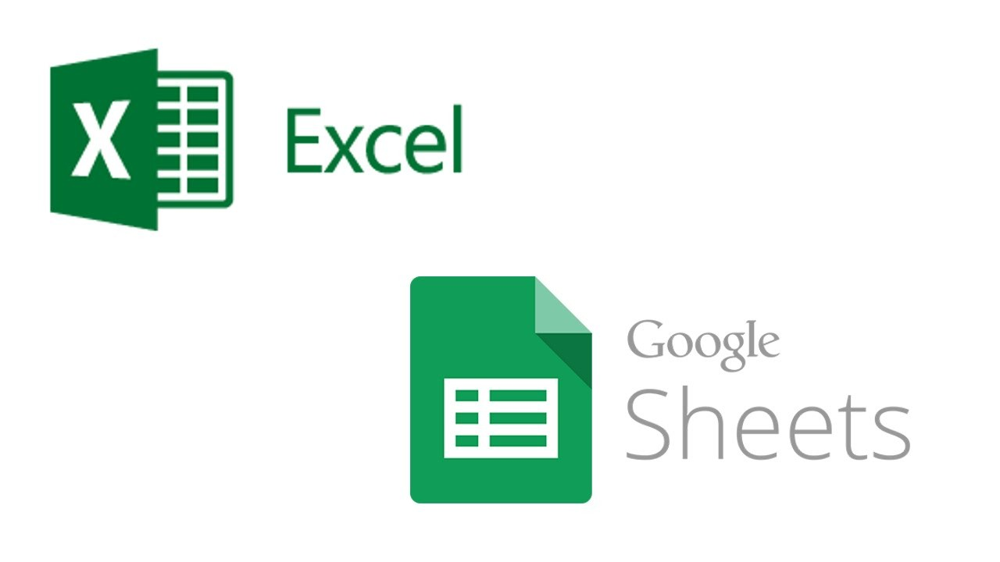

This project focuses on analyzing global COVID-19 data, including cases, deaths, and vaccinations. The analysis is performed using SQL queries to extract valuable insights from the data, such as total cases, deaths, infection and mortality rates by country and continent, as well as vaccination progress. Skills used: Joins, CTE's, Windows Functions, Aggregate Functions, Converting Data Types.

In this project, real economic data is analyzed using Python and Pandas, including data extraction from the FRED API. Techniques for data cleaning, exploration, and visualization are shown.

This project analyzes sales data from a fictional pizza shop, using SQL queries to extract insights related to revenue, order trends, and pizza popularity. The dataset includes information on pizza sales, such as order details, pizza categories, sizes, and quantities sold.
This dashboard provides an analysis of electric vehicle data, showcasing key insights such as total vehicles sold, trends by model year, and distribution by state.It includes metrics like average electric range, sales distribution by category, and eligibility under clean fuel vehicle programs.
The objective of the dashboard is to provide a visual overview of sales, order trends, top-selling pizza categories, most popular sizes, and the overall performance of the store. Through interactive visualizations, insights can be drawn about customer behavior and the most effective sales strategies.

This drive contains two data analysis projects:
Stock Portfolio Project: A detailed analysis of an investment portfolio in Google Sheets, using functions like GOOGLEFINANCE for real-time prices and SPARKLINE to visualize stock trends.
Bike Sales Analysis: An Excel project focused on analyzing bicycle sales. It includes data cleaning, Pivot Table creation, and an interactive dashboard highlighting purchase patterns and key sales performance metrics.